1. O bolão em resumo
O caminho do começo ao fim e quem faz o quê.
1.1 O bolão do começo ao fim
Sete etapas, sempre na mesma ordem.
- 1
Convite e entrada. O organizador convida você pelo app. Você cria a conta (ou entra) e aceita o convite.
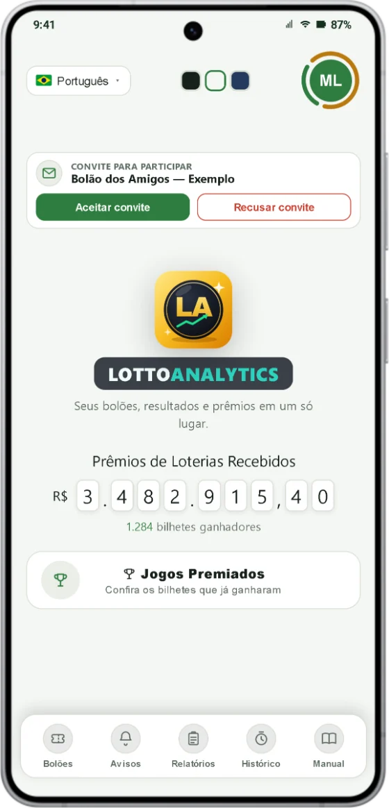
Convite recebido no app. - 2
Cotas e termo. Você escolhe quantas cotas quer e assina o termo do bolão no app. A assinatura fica registrada com data e hora.
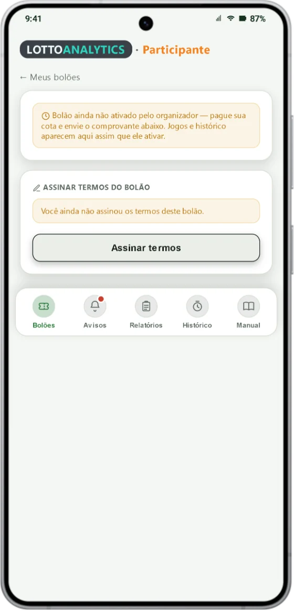
Assinatura do termo. - 3
Pagamento. Você paga a cota por PIX, em seu próprio nome, e envia o comprovante pelo app até o prazo definido pelo organizador (normalmente o domingo).
- 4
Ativação. Quando o prazo vence — ou antes, se todos já pagaram — o bolão é ativado automaticamente. Quem não pagou é removido e nenhum participante novo entra mais (Capítulo 3).
- 5
Jogos e bilhetes. O organizador faz os jogos, registra as apostas na lotérica ou no site oficial e anexa os bilhetes no app. Você vê tudo na aba Jogos.
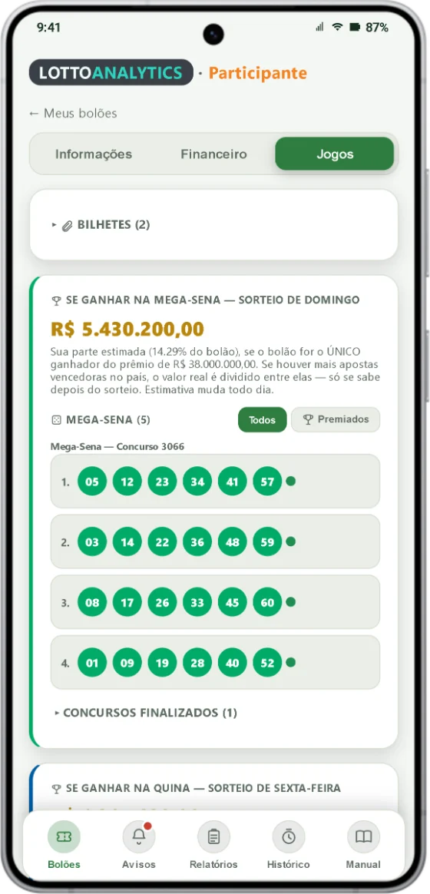
Aba Jogos. - 6
Resultado e prêmio. O app confere os jogos com o resultado oficial da Caixa e avisa você. Havendo prêmio, ele é dividido por cota (Capítulo 5).
- 7
Prestação de contas. Relatórios, histórico e o dossiê do prêmio mostram tudo: quem pagou, quanto, quais jogos e qual prêmio.
Quer saber mais?
O organizador não é dono exclusivo das apostas: ele apenas recebe as contribuições, registra as apostas, guarda os comprovantes e presta contas. Se o prêmio cair na conta dele (porque a plataforma não divide automaticamente), o valor pertence ao grupo desde o momento da aposta.
1.2 Quem faz o quê
Cada papel, com o que faz e o que não faz.
| Quem | O que faz | O que NÃO faz |
|---|---|---|
| Participante | Paga a cota (PIX no próprio nome), assina o termo, envia o comprovante e o CPF, acompanha o bolão, pode sugerir jogos (palpites) e confirma o recebimento do prêmio. | Não registra as apostas. |
| Organizador | Reúne o grupo, recebe as cotas, faz e registra as apostas, confere os resultados, credita o prêmio, paga por PIX o que for devido e presta contas. | Não sorteia nem opera loteria. Não é dono exclusivo das apostas. |
| Caixa Econômica Federal | Opera as loterias e paga o prêmio (com o Imposto de Renda já retido). | Não tem vínculo com o bolão: o bolão é um acordo privado entre os participantes. |
| LottoAnalytics (o app) | Registra tudo com data e hora, calcula a divisão, avisa por notificação e gera os documentos. | Não faz apostas, não paga prêmios e não garante resultado. |
2. Sua participação: o que é exigido
O que você precisa fazer — e por quê.
2.1 O que passa a ser exigido de cada participante
Estas regras servem para provar que cada pessoa é coapostadora desde o início (veja o documento Isenção do ITCMD).
- 1
Assinar o termo do bolão, com carimbo de data e hora. A orientação é assinar antes de haver prêmio: assinar depois do resultado não tem o mesmo valor como prova.
- 2
Enviar o comprovante de pagamento da cota, em seu nome (comprovante nominal). Não vale comprovante em nome de outra pessoa pagando por você.
- 3
Informar o seu CPF. É o único item sem prazo: pode ser enviado a qualquer momento, antes ou depois do prêmio.
- 4
Usar o aplicativo, instalado, funcionando e com as notificações ligadas. Tudo passa a ser feito por ele.
- 5
O bolão é ativado automaticamente quando o prazo de pagamento vence (ou antes, se todos já pagaram). O prazo é definido pelo organizador, normalmente o domingo. Veja o Capítulo 3.
- 6
Depois de ativado, o bolão não aceita mais participante novo: o sistema bloqueia automaticamente.
- 7
É proibida a participação de menores de 18 anos.
2.2 Cotas, pagamento e prazos
Quanto se paga, como se paga e o que acontece se algo sair errado.
- 1
O valor da cota é definido pelo organizador. Ele pode variar conforme a quantidade de dezenas, o volume de apostas e a modalidade da loteria. Cota é participação em uma estratégia coletiva, sem garantia de prêmio.
- 2
Pague por PIX. O titular da conta que fez o PIX é considerado o participante oficial.
- 3
Guarde o comprovante e envie pelo app. Ele fica registrado no bolão.
Quer saber mais?
Pagamento fora do prazo ou com valor diferente do da cota pode ser desconsiderado para o concurso vigente e estornado. Se houver diferença entre o valor pago e as cotas registradas, vale o valor efetivamente recebido e validado pelo organizador, com os ajustes necessários. Pagamento indevido, duplicado ou a maior deve ser devolvido (Código Civil, art. 876).
2.3 Quanto o organizador recebe pelo trabalho
O Termo sempre informa, de forma clara, como o organizador é remunerado. São quatro modelos.
- 1
No programa de computador, o organizador escolhe o modelo no cartão Administrador (Cobrança de organização). O participante vê a regra no Termo.

Cartão Administrador (Desktop).
| Modelo | Como funciona |
|---|---|
| Sem taxa | O organizador não cobra nada: não retém valor das cotas nem dos prêmios. |
| Cotas isentas | O organizador participa com cota(s) que ele não paga; o custo é diluído entre os demais no rateio dos jogos. Não há cobrança sobre os prêmios. |
| Valor fixo | Um valor fixo de organização para o período do bolão, rateado entre os participantes. Não há cobrança sobre os prêmios. |
| Percentual do prêmio | Uma taxa (%) sobre o valor bruto do prêmio, aplicada só quando houver prêmio e descontada antes da divisão. Não incide sobre o valor das cotas. |
2.4 Avisos e informações no app
Você não precisa perguntar para saber a situação do bolão.
- 1
Chegam notificações quando: novos jogos são vinculados ao bolão, os bilhetes são anexados, os resultados são atualizados, há prêmio ou um convite para um bolão novo é enviado. Também chegam as mensagens que o organizador manda.
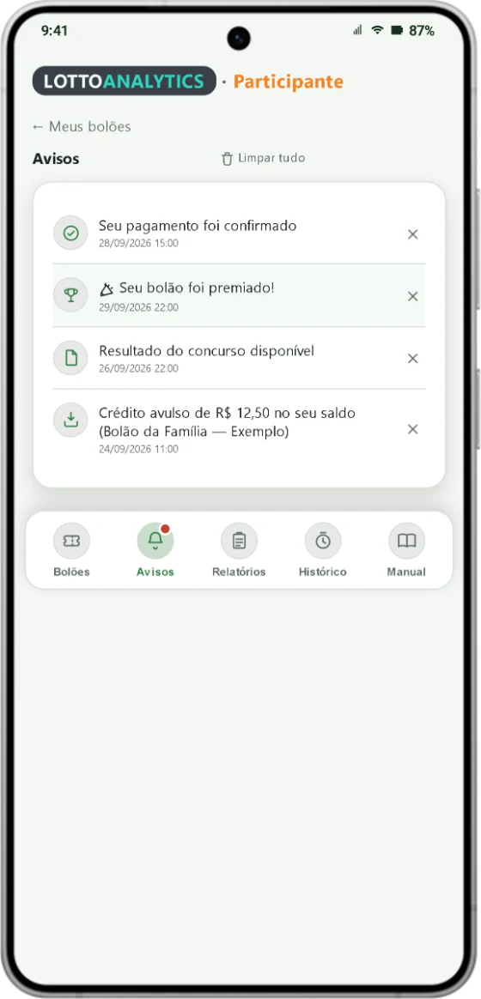
Aba Avisos. - 2
Todas as informações do bolão ficam disponíveis a qualquer momento, individualmente, para cada participante, dentro do app.
- 3
Os avisos automáticos chegam no idioma de cada pessoa.
Quer saber mais?
Para proteger a privacidade, o app não mostra valores em reais de outros participantes: a lista "Confirmado participando" mostra só quem já pagou e quantas cotas cada um tem.
3. Prazo, ativação e encerramento automáticos
O bolão tem começo e fim com hora marcada, e o sistema cuida disso sozinho. Aqui está, passo a passo, o que acontece, quando e por quê — para você não ficar com nenhuma dúvida.
3.1 A linha do tempo: do convite à exclusão
Tudo o que o sistema faz sozinho, na ordem em que acontece.
| Quando | O que acontece | Quem faz |
|---|---|---|
| Antes do início (por exemplo, de quarta a domingo) | Convite, escolha das cotas, assinatura do termo, pagamento por PIX e envio do comprovante. | Participante |
| 2 horas, 1 hora, 30 minutos e 10 minutos antes do prazo | Aviso no celular de quem ainda não pagou. | Sistema |
| No horário do prazo de pagamento | Mensagem de cobrança final e, em até 5 minutos, ativação automática: quem não pagou é removido. | Sistema |
| Antes do prazo, se todos já pagaram | Ativação automática na hora, sem esperar o prazo. | Sistema |
| Depois da ativação | Cotas travadas; nenhum participante novo e nenhum comprovante novo. Jogos e resultados seguem normalmente. | Sistema |
| 13h (Brasília) do último dia do bolão | O bolão é encerrado: passa a aparecer como Encerrado (inativo). | Sistema |
| 30 dias depois do encerramento | O bolão é excluído automaticamente e some do app. | Sistema |
O prazo vence → quem não pagou sai e o bolão é ativado sozinho. No último dia, às 13h, o bolão é encerrado. 30 dias depois, é excluído.
3.2 O prazo de pagamento
Até quando você pode pagar — e o que conta como "pago".
- 1
O organizador define a data e a hora limite de pagamento de cada bolão. Elas aparecem no Termo que você assina (por exemplo: "encerramento em tal dia, às tal hora"). Normalmente é o domingo, antes de o bolão começar na segunda-feira.
- 2
O prazo vale até o minuto marcado, no horário de Brasília.
- 3
O que conta é o pagamento confirmado no sistema — não basta ter enviado o comprovante (veja a seção "Comprovante e confirmação do pagamento").
- 4
Se o organizador mudar o prazo, os avisos automáticos passam a valer para o novo horário.
3.3 Os avisos automáticos antes do prazo
O sistema lembra quem ainda não pagou, sem o organizador precisar fazer nada.
- 1
O sistema envia um aviso para o celular de quem ainda não pagou: 2 horas, 1 hora, 30 minutos e 10 minutos antes do prazo.
- 2
Quem já pagou não recebe esses avisos. Se você pagou e recebeu um aviso, é sinal de que o seu pagamento ainda não foi confirmado: fale com o organizador.
- 3
O organizador pode personalizar o título e a mensagem desses quatro avisos. Se não personalizar, o app usa um texto padrão.
- 4
No horário exato do prazo sai a mensagem de cobrança final, com texto fixo. Ela informa que o prazo de adesão se encerra naquela data e hora; que todo o processo é feito pelo app; e que, depois do horário, o bolão será encerrado para novas adesões, quem não pagou será removido e o envio de comprovantes ficará bloqueado. Diz também que não serão feitas inclusões ou liberações manuais e que uma nova participação só poderá ocorrer no próximo bolão.
Quer saber mais?
Os avisos chegam como notificação. Por isso o app precisa estar instalado e com as notificações ligadas (veja o Capítulo 2). Sem notificações você pode perder o aviso, mas o prazo vale do mesmo jeito.
3.4 Comprovante do PIX e confirmação do pagamento
O comprovante tem que ser de um PIX, com o valor certo. O app confere tudo sozinho.
- 1
O comprovante tem que ser de um PIX, em seu nome. O PIX é rastreável: o banco registra quem pagou, quanto, quando e para quem. É isso que dá valor de prova ao comprovante.
- 2
O valor do comprovante precisa corresponder ao número de cotas que você escolheu. Por exemplo: 2 cotas de R$ 50,00 pedem um PIX de R$ 100,00.
- 3
Você envia o comprovante pelo app. Isso só é possível até a ativação do bolão: depois dela, o sistema bloqueia o envio.
- 4
O app lê o comprovante na hora e compara o valor e a data com o que deveria ter sido pago. Tudo acontece de forma automática.
- 5
Se o valor corresponde, o pagamento passa a pago sozinho e o organizador recebe um aviso.
- 6
Se o valor equivale a outra quantidade de cotas (por exemplo, você escolheu 3 cotas e pagou 2), o app mostra a diferença e pergunta se você quer ficar com a quantidade que pagou. Se você aceitar, o app corrige as cotas e confirma o pagamento. Vale tanto para pagar a menos quanto a mais. Se não aceitar, o comprovante é descartado e você pode enviar outro.
- 7
Se o valor não equivale a um número exato de cotas (não é múltiplo do valor da cota), o app não aceita o comprovante e mostra a mensagem de que o valor não corresponde ao número de cotas. Confira o valor do PIX e envie de novo.
- 8
Se o comprovante não puder ser lido (cortado, borrado, valor ou data ilegíveis), o app o guarda, mas o status não muda para pago. O sistema tenta ler de novo sozinho e o organizador é avisado para conferir à mão.
- 9
Só o pagamento com situação "pago" conta no momento da ativação.
3.5 A ativação automática
O bolão é ativado sozinho em duas situações — vale a que vier primeiro. O organizador também pode ativar à mão.
| Situação | Quando acontece | O que saber |
|---|---|---|
| 1. O prazo venceu | Passou a data e a hora limite de pagamento. | É o caminho normal. A ativação sai em até 5 minutos depois do horário. |
| 2. Todos já pagaram | Todas as pessoas que estão no bolão têm o pagamento confirmado. | O bolão é ativado na hora, sem esperar o prazo. Por isso, quem quer entrar deve ser cadastrado antes de todos pagarem. |
| 3. O organizador ativa (opcional) | O organizador toca em Ativar Bolão no Desktop, antes do prazo. | O app mostra quantas pessoas serão removidas e pede confirmação. O resultado é o mesmo da ativação automática. |
3.6 O que acontece no momento da ativação
Tudo o que o sistema faz, nesta ordem.
- 1
Quem não pagou é removido do bolão, esteja marcado como ativo ou não. O cadastro da pessoa continua; só sai o vínculo com aquele bolão. O registro não é apagado do sistema, mas a pessoa deixa de fazer parte do bolão.
- 2
Quem foi removido recebe um aviso explicando o motivo: removido do bolão por não ter confirmado o pagamento até o prazo (com a data e a hora do prazo).
- 3
Quem ficou recebe o aviso "Bolão Ativado, Boa Sorte!", confirmando que o bolão já vale. Se houver saldo avulso creditado antes da ativação, o aviso informa também quanto dele cabe a cada cota.
- 4
O organizador é avisado de que o bolão foi ativado sozinho, por qual motivo (prazo vencido ou todos pagos) e quantas pessoas foram removidas.
- 5
Tudo fica no registro de auditoria, com data, hora, motivo e número de pessoas removidas.
- 6
O Termo de Constituição de Bolão Particular passa a ser gerado, com a lista de participantes, cotas e percentuais.
3.7 O que muda depois da ativação
O bolão fica "fechado": o grupo e as cotas não mudam mais.
- 1
Nenhum participante novo entra. Quem quiser participar deve esperar o próximo bolão.
- 2
A quantidade de cotas de cada um fica travada.
- 3
O envio de comprovantes fica bloqueado.
- 4
Por regra do bolão — e como diz o aviso final de cobrança — não são feitas inclusões nem liberações manuais depois do prazo. A regra vale para todos, para que ninguém seja favorecido.
- 5
Os jogos, os resultados e o Prêmio → Saldo seguem normalmente. Até a ativação, o bolão aparece no app como "Aguardando ativação".
3.8 O fim do bolão: o encerramento automático
Quando o bolão passa a constar como encerrado.
- 1
O bolão tem um último dia (o fim da semana ou do mês do bolão, normalmente um domingo). Às 13h, horário de Brasília, desse dia o bolão é encerrado automaticamente.
- 2
Encerrado, ele passa a aparecer no app do participante como Encerrado (inativo), numa área separada dos bolões ativos e com aparência esmaecida.
- 3
Um bolão que chegou ao seu último dia não recebe mais jogos novos.
- 4
O organizador pode encerrar antes, com o botão Encerrar Bolão (Desktop). O bolão passa a terminar no dia em que o botão foi usado: consta como encerrado às 13h desse mesmo dia (ou na hora, se o botão for usado depois das 13h).
3.9 A exclusão automática, 30 dias depois
Por quanto tempo o bolão fica guardado.
- 1
O bolão fica guardado por 30 dias corridos depois do encerramento, contados a partir das 13h do último dia.
- 2
Passados os 30 dias, o sistema o exclui automaticamente, uma vez por dia, de madrugada (horário de Brasília). Ele deixa de aparecer no app, junto com seus participantes, jogos e relatórios.
- 3
A exclusão marca o bolão como excluído; ela não é um "apagar" definitivo do banco, mas, para você, é como se ele tivesse sumido do app.
3.10 Exemplos para tirar dúvidas
Situações comuns e o que acontece em cada uma.
| Situação | O que acontece |
|---|---|
| Paguei e enviei o comprovante com folga; foi lido e confirmado. | Você fica no bolão. Nada mais a fazer. |
| Enviei o comprovante 5 minutos antes do prazo e o sistema ainda não leu. | Se o pagamento ainda estiver pendente na ativação, você é removido. Avise o organizador antes do prazo para ele confirmar na hora. |
| Escolhi 3 cotas, mas o PIX foi de apenas 2 (ou de 4). | O app mostra a diferença e pergunta se você quer ficar com 2 (ou 4) cotas. Se aceitar, ele corrige as cotas e confirma o pagamento. |
| O valor do PIX não é múltiplo do valor da cota. | O app não aceita o comprovante e avisa que o valor não corresponde ao número de cotas. Faça o PIX do valor certo e envie de novo. |
| Todo mundo que está no bolão pagou na quinta-feira, e o prazo é domingo. | O bolão é ativado na quinta (todos pagos). Ninguém mais entra. |
| Uma pessoa não pagou até o prazo. | Na ativação ela é removida e recebe um aviso. O bolão segue com os demais. |
| Quero entrar no bolão depois que ele foi ativado. | Não é possível. Você pode entrar no próximo bolão. |
| Recebi um aviso de prazo, mas já paguei. | O seu pagamento ainda não foi confirmado. Fale com o organizador. |
| O bolão terminou no domingo. | Às 13h ele passa a Encerrado. 30 dias depois é excluído. |
4. Os jogos e o dinheiro das apostas
Para onde vai o dinheiro das cotas e como sugerir jogos.
4.1 Arrecadação, custo e saldo disponível
Os três números que contam a história do dinheiro do bolão.
- 1
Na aba Financeiro: Arrecadação total é o que todos pagaram; Custo das apostas é o que foi gasto nos jogos; Saldo disponível é o que sobra.
Aba Financeiro no celular. - 2
No programa de computador, o cartão Controle de Gastos mostra o gasto e o saldo por loteria, o histórico de rodadas e os gastos diários e semanais.
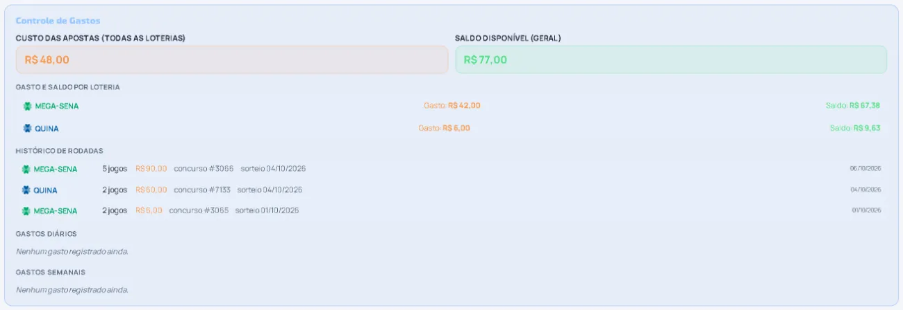
Controle de Gastos (Desktop). - 3
Meu saldo é a sua contribuição paga menos a sua parte no custo das rodadas já vinculadas ao bolão (o custo é dividido igualmente entre os ativos).
Quer saber mais?
A arrecadação é a soma do que foi pago pelos participantes ativos. O que sobra depois de pagar os jogos fica como saldo para as próximas rodadas.
4.2 Orçamento semanal e prêmios de baixo valor
Prêmios pequenos não viram dinheiro na mão: voltam para o bolão.
- 1
O total arrecadado das cotas é dividido em 4 partes, uma para cada semana do mês.
- 2
Exemplo: com 12 cotas de R$ 36,00, o total é R$ 432,00 e o orçamento é de R$ 108,00 por semana para jogos.
- 3
Qualquer valor usado além do orçamento semanal vem dos prêmios de baixo valor recebidos. Não é cobrado extra de ninguém.
Quer saber mais?
É isso que a Faixa 1 faz (Capítulo 5): prêmios pequenos entram como crédito no saldo do participante, dentro do bolão, e ajudam a pagar os jogos seguintes.
4.3 Palpites: sugerir jogos e o limite por seção
Você pode sugerir jogos ao organizador, e o organizador pode limitar o valor.
- 1
No bolão, toque em Enviar palpite, escolha a loteria e os números, adicione à lista e envie ao gestor.
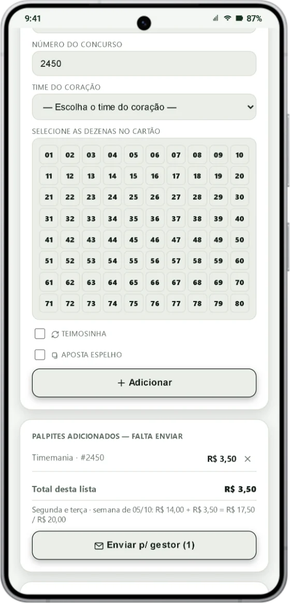
Lista de palpites com o total e o limite. - 2
Na Timemania é obrigatório escolher o time do coração; no Dia de Sorte, o mês de sorte.
- 3
O organizador analisa: Vincular (aceita e o jogo entra no bolão) ou Recusar (com o motivo). Ele pode usar Vincular todos para aceitar vários de uma vez.
- 4
O organizador pode definir um limite de palpites por seção: um valor só, em R$. As seções são as três partes da semana em que o bolão joga: segunda e terça, quarta e quinta e sexta a domingo. O limite vale para a soma de todos os participantes em cada seção.
- 5
Se a sua lista fizer o total passar do limite, o app avisa em vermelho e não deixa enviar: retire jogos até caber.
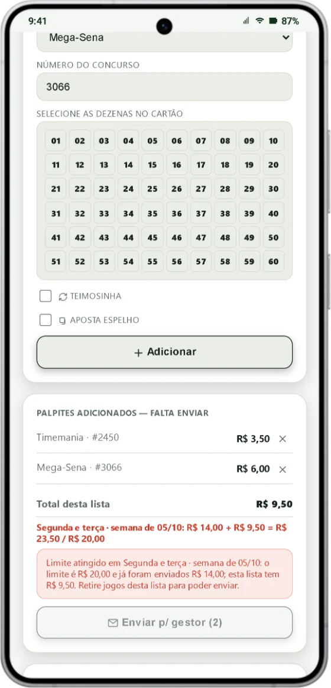
Aviso de limite atingido.
Quer saber mais?
Abaixo de Total desta lista o app mostra o Limite por seção. Se aparecer "Não definido", o organizador ainda não definiu limite. O limite é o mesmo em qualquer lugar onde o organizador o defina (celular ou computador).
4.4 Bilhetes, comprovantes e resultado oficial
O que vale como prova e o que vale como resultado.
- 1
A validade das apostas depende do registro efetivo em casas lotéricas autorizadas ou nos sistemas oficiais das Loterias Caixa.
- 2
As fotos ou PDFs dos bilhetes e os comprovantes de PIX ficam anexados ao bolão.
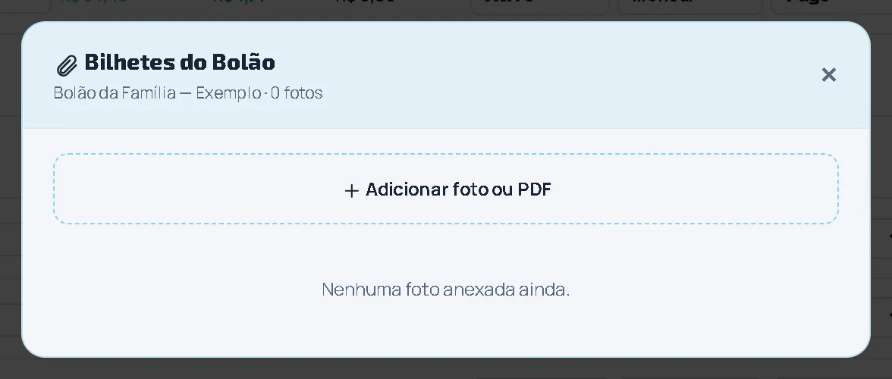
Bilhetes do bolão (Desktop). - 3
Para conferir apostas e prêmios vale exclusivamente o resultado oficial divulgado pelas Loterias Caixa.
5. Prêmio → Saldo: como o prêmio é dividido
Só o organizador usa esta tela, mas o que ela faz afeta todos. Aqui está tudo, sem segredo.
5.1 A ideia geral
O prêmio é dividido por cota e cada fatia do valor tem um destino.
- 1
Quando o bolão ganha, o organizador abre Prêmio → Saldo. No alto está o Resumo do prêmio: o prêmio apurado (somado dos jogos premiados), o que já foi creditado e o que está disponível para creditar.
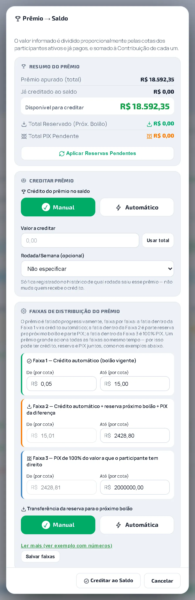
Prêmio → Saldo (Desktop). - 2
O prêmio é dividido pela parte de cada cota: prêmio ÷ cotas pagas = valor por cota. Cada pessoa recebe pela quantidade de cotas que tem.
- 3
Se existir taxa de organização em %, ela é descontada antes da divisão (veja 2.3).
- 4
O valor de cada cota é então fatiado em 3 faixas, como no Imposto de Renda: cada fatia tem um destino (próxima seção).
- 5
O organizador credita, e cada participante recebe uma notificação com a sua parte.
Prêmio pequeno vira crédito no saldo; prêmio médio reserva o valor de uma cota para o próximo bolão e paga o resto por PIX; prêmio grande é pago, na maior parte, por PIX.
5.2 As três faixas
Os limites abaixo são os padrões; o organizador pode ajustá-los.
| Faixa | Valor por cota (padrão) | Destino |
|---|---|---|
| Faixa 1 | de R$ 0,05 até R$ 15,00 | Crédito automático no saldo do participante, dentro do bolão. |
| Faixa 2 | de R$ 15,01 até R$ 2.428,80 | Reserva para o próximo bolão (no máximo o valor de uma cota) + PIX do que sobrar. |
| Faixa 3 | de R$ 2.428,81 até R$ 2.000.000,00 | PIX direto: 100% do que passar da Faixa 2. |
Quer saber mais?
Os Termos e Condições do bolão trazem a mesma regra por escrito, na cláusula "Distribuição das Premiações": as premiações são distribuídas proporcionalmente às cotas, após a taxa administrativa (quando houver), e em todos os casos é respeitado o número de cotas e o percentual de cada participante.
5.3 Exemplos com números
Com as faixas padrão e uma cota custando R$ 50,00. Os valores abaixo são por cota.
| Prêmio por cota | Crédito no saldo | Reserva p/ próximo bolão | PIX |
|---|---|---|---|
| R$ 12,00 | R$ 12,00 | — | — |
| R$ 45,00 | R$ 15,00 | R$ 30,00 | — |
| R$ 180,00 | R$ 15,00 | R$ 50,00 | R$ 115,00 |
| R$ 5.000,00 | R$ 15,00 | R$ 50,00 | R$ 4.935,00 |
Quer saber mais?
Exemplo de aviso para um prêmio de R$ 180,00 por cota: "Prêmio creditado! Seu prêmio de R$ 180,00 foi dividido assim: R$ 15,00 creditados automaticamente ao seu saldo neste bolão; R$ 50,00 reservados para o próximo bolão; R$ 115,00 serão pagos via PIX pelo organizador."
5.4 Crédito automático ou manual
O organizador escolhe como o prêmio entra no saldo.
- 1
Em Crédito do prêmio no saldo: no modo Automático, o prêmio entra no saldo assim que o resultado sai; no modo Manual, o organizador usa o botão Creditar.
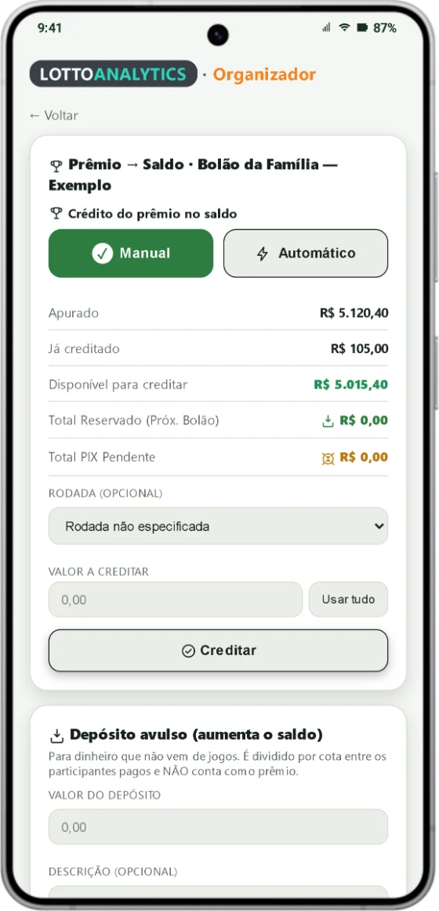
Prêmio → Saldo no celular. - 2
No modo manual ele vê Apurado, Já creditado e Disponível para creditar, usa Usar tudo (ou digita um valor) e confere a prévia do rateio: para cada pessoa, o crédito, a reserva e o PIX.
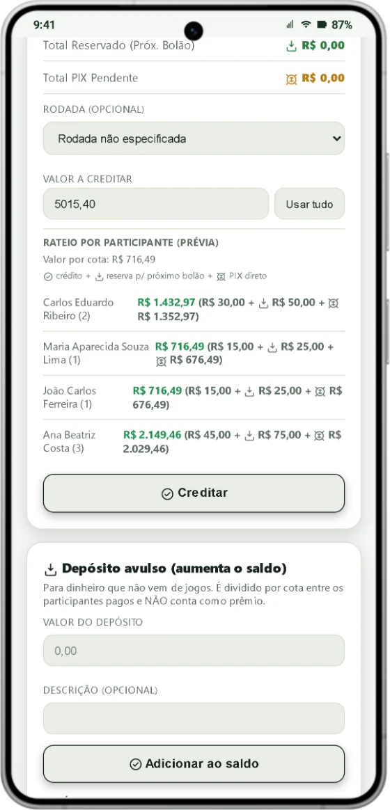
Prévia do rateio. - 3
Ao tocar em Creditar, cada participante recebe a notificação com a sua parte.
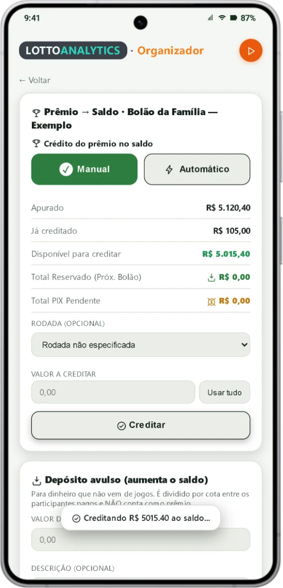
Prêmio creditado.
Quer saber mais?
O valor é dividido pelas cotas de quem já pagou. Cada crédito fica no histórico de créditos do bolão (data, valor, rodada e quantos participantes pagos receberam).
5.5 Reserva para o próximo bolão
Na Faixa 2, o valor de uma cota fica guardado para você participar do bolão seguinte.
- 1
O valor reservado é, no máximo, o preço da cota vigente. Você o vê em Reserva próx. bolão, na aba Financeiro.
- 2
O organizador escolhe como transferir: Automática (a reserva entra sozinha no próximo bolão assim que você é adicionado a ele) ou Manual (ele toca em Aplicar Reservas Pendentes no bolão novo).
Quer saber mais?
A reserva é aplicada ao bolão novo em seu nome, para ajudar a cobrir a sua participação nele.
5.6 PIX: quando o prêmio passa da reserva
O que passar da reserva é pago a você por PIX.
- 1
O que sobra da Faixa 2 e tudo o que passa da Faixa 3 é pago por PIX, de preferência para a chave ligada ao seu CPF. Você vê o valor em PIX dif./prêmio.
- 2
O app só registra o valor a pagar: a transferência é feita por fora, pelo próprio organizador.
- 3
Quando o dinheiro chegar, abra Relatórios e toque em Confirmar recebimento do prêmio.
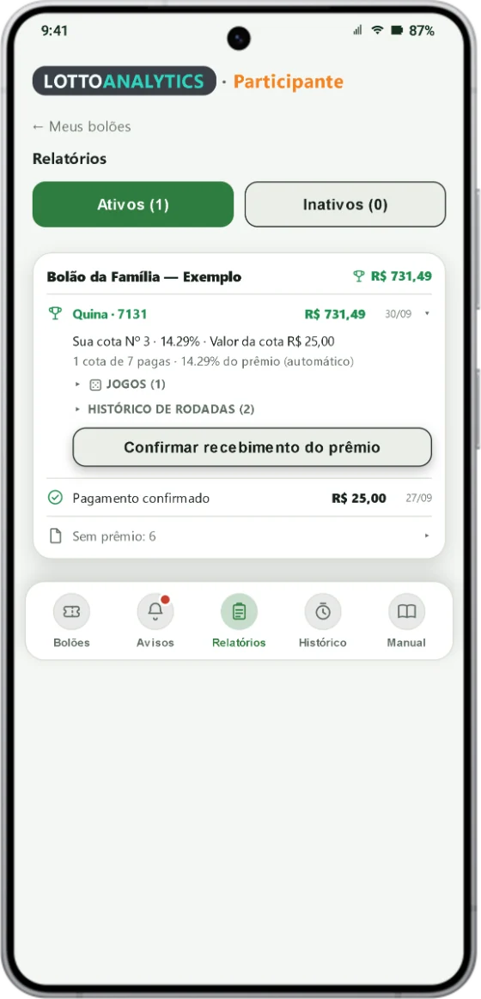
Relatório do prêmio. - 4
Fica registrado "Recebimento confirmado", com a data.
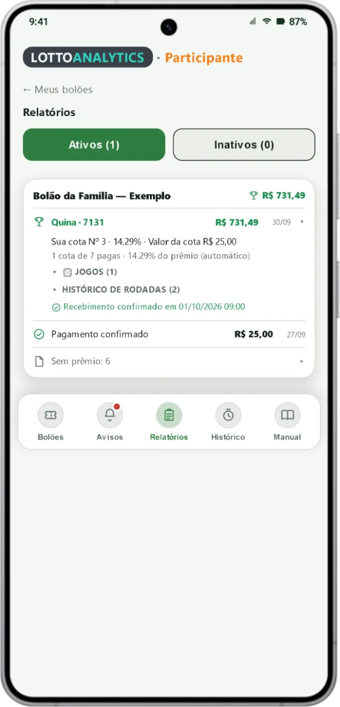
5.7 Depósito avulso: dinheiro que não veio de jogos
Para somar ao saldo um valor que não é prêmio: um brinde, uma sobra, um reembolso.
- 1
O organizador, em Prêmio → Saldo → Depósito avulso, digita o valor e uma descrição e toca em Adicionar ao saldo.
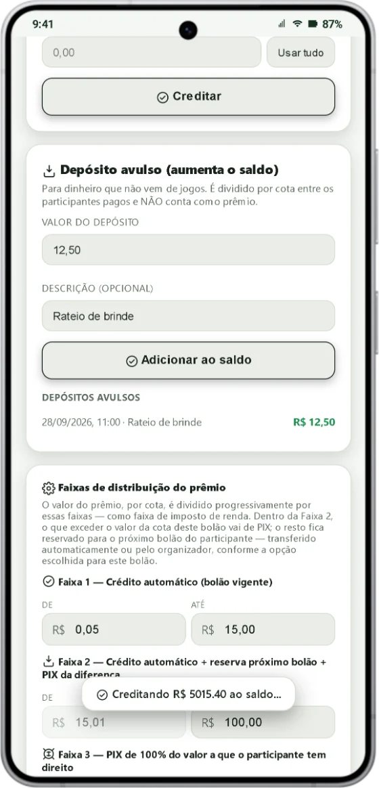
- 2
O valor é dividido por cota entre os participantes que pagaram e não conta como jogo. Cada pessoa recebe o aviso "Crédito avulso no seu saldo".
5.8 Transferir o saldo para outro bolão
Sobrou saldo e vai começar um bolão novo? Dá para levar o dinheiro junto.
- 1
No bolão de origem, o organizador escolhe Transferir saldo para outro bolão, o bolão de destino e o valor, e usa Simular divisão: o app mostra, para cada pessoa, quanto ela recebe e quanto ainda paga.
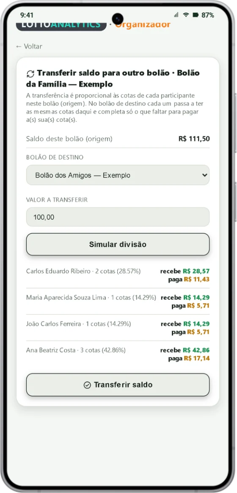
Simulação da transferência. - 2
No programa de computador é o botão Transferir Saldo, com a mesma simulação.
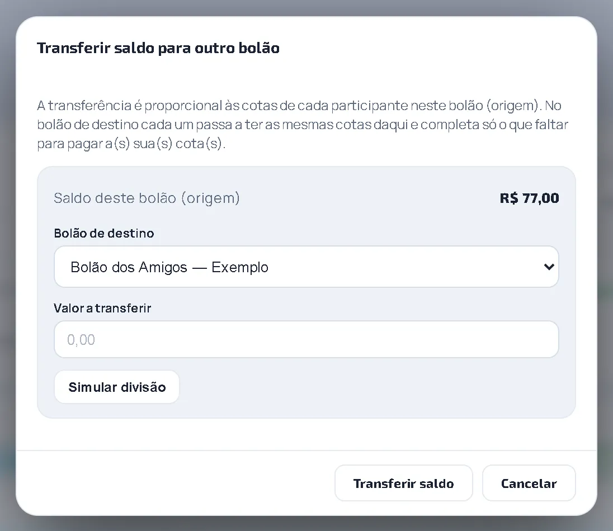
Transferir Saldo (Desktop). - 3
A divisão é proporcional às cotas que cada pessoa tem no bolão de origem. No destino, ela passa a ter as mesmas cotas e paga só a diferença, se houver.
- 4
Só quem fez parte do bolão de origem recebe, e essas pessoas já precisam estar no bolão de destino. Pessoas novas no destino pagam o valor cheio da cota e não recebem nada da transferência. O destino não pode estar ativado.
Quer saber mais?
Se o valor digitado for maior do que o permitido, o app mostra o máximo que dá para transferir.
6. Transparência, provas e privacidade
Tudo fica registrado, com data e hora, e você tem acesso.
6.1 Termos e Condições e Termo de Constituição
Os dois documentos que o organizador gera para o bolão.
- 1
Os Termos e Condições definem direitos e deveres do organizador e dos participantes: natureza do serviço, participação, taxa administrativa, distribuição e pagamento das premiações, prazos, resultado oficial, privacidade, responsabilidades e foro.
Termos e Condições (Desktop). - 2
O Termo de Constituição de Bolão Particular é gerado quando o bolão é ativado. Ele lista cada participante (nome, CPF, cotas, percentual, valor pago e assinatura), o objeto do bolão, a responsabilidade do organizador e a divisão dos prêmios.

Termo de Constituição (Desktop). - 3
Nele consta que os valores pertencem ao grupo desde a realização da aposta e que o organizador não é proprietário exclusivo das apostas.
Quer saber mais?
É um acordo privado, sem vínculo com a Caixa, regido pela liberdade contratual e pela boa-fé (Código Civil, arts. 421 e 422). O modelo padrão deve ser revisado por advogado antes do uso.
6.2 Relatórios e o kit de provas
Guarde estes documentos: eles provam que o bolão existia antes do prêmio.
- 1
Termo de Constituição do Bolão: data, nome de todos, CPF e a porcentagem de cada um, registrados antes do sorteio.
- 2
Comprovante de compra da aposta: o PDF gerado no app Loterias CAIXA ou no site Loterias Online.
- 3
Comprovante de resgate: cópia do documento emitido pela Caixa com o prêmio no nome de quem resgatou.
- 4
Extrato do relatório com data e hora: o documento gerado pelo app que comprova o rateio oficial.
- 5
Comprovante do PIX: o comprovante bancário de cada transferência feita aos participantes.
- 6
O Dossiê do Prêmio junta, num documento só, o Termo de Constituição, os jogos premiados e os comprovantes de depósito. É recomendado para prêmios acima de R$ 10 mil por cota.
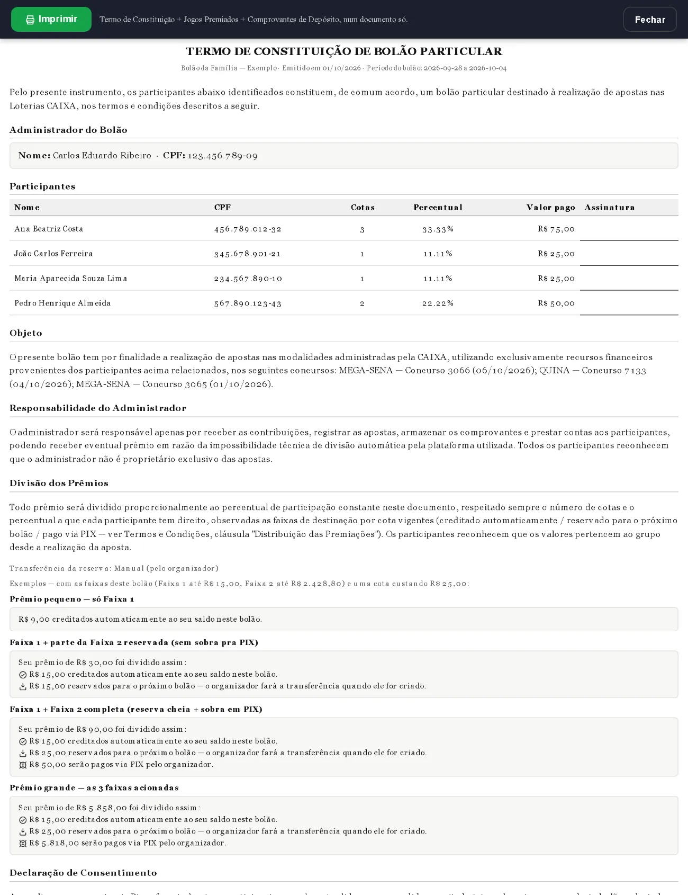
Dossiê do Prêmio (Desktop).
6.3 Privacidade e prevenção a fraudes
Os seus dados são usados só para o bolão.
- 1
Os dados pessoais são tratados conforme a Lei Geral de Proteção de Dados (LGPD, Lei nº 13.709/2018), para identificar os participantes, organizar o bolão, pagar prêmios e prestar contas.
- 2
O app não mostra valores em reais de outros participantes.
- 3
O organizador pode verificar identidade e pagamentos para prevenir fraudes, e pode recusar participações ou transações com indício de irregularidade.
Perguntas frequentes
Sou obrigado a assinar o termo do bolão?
Não. Mas, se você não assinar e o prêmio vier a ser tributado como doação, a responsabilidade por esse imposto recai sobre essa escolha. Veja o item 1.4 do documento Isenção do ITCMD.
Por que o comprovante de PIX precisa estar no meu nome?
Porque ele prova que você pagou a sua cota, desde o início. Comprovante em nome de outra pessoa não prova isso.
Posso pagar a cota de outra pessoa?
O ideal é que cada pessoa pague a própria cota, no próprio nome. Se alguém precisa de ajuda, converse com o organizador antes de pagar.
O que acontece se eu não pagar até o prazo?
No horário do prazo, o bolão é ativado automaticamente e quem não tem o pagamento confirmado é removido (o cadastro continua) e recebe um aviso. Veja o Capítulo 3.
Posso entrar depois que o bolão foi ativado?
Não. Depois da ativação o sistema bloqueia novos participantes. Você pode entrar no próximo bolão.
Por que o meu prêmio pequeno não veio em dinheiro?
Porque prêmios pequenos (até R$ 15,00 por cota, no padrão) viram crédito no seu saldo dentro do bolão e ajudam a pagar os jogos seguintes. Veja o Capítulo 5.
O que é a reserva e quando eu a recebo?
É o valor de uma cota guardado para o próximo bolão. Ela entra sozinha (reserva automática) ou quando o organizador toca em Aplicar Reservas Pendentes.
Quando recebo por PIX?
Quando o prêmio por cota passa da reserva. O organizador faz o PIX por fora do app; quando o dinheiro chegar, toque em Confirmar recebimento do prêmio.
O organizador pode mudar as faixas?
Pode, a qualquer momento. O app avisa os participantes quando isso acontece, e o cálculo usa as faixas vigentes na hora de creditar.
O prêmio cai na conta do organizador. Isso é um problema?
Não, desde que o bolão esteja documentado: o Termo de Constituição diz que os valores pertencem ao grupo desde a aposta, e o organizador declara o repasse no Imposto de Renda (veja o documento Isenção do ITCMD).
Onde vejo o limite de palpites do bolão?
Na tela Enviar palpite, abaixo de Total desta lista: aparece Limite por seção com o valor, ou "Não definido" se o organizador ainda não definiu.
Por que não consigo enviar o meu palpite?
Provavelmente o total da sua lista passou do limite por seção (a soma de todos os participantes). Retire jogos da lista até caber.
Paguei, mas fui removido do bolão. Por quê?
Na ativação o sistema considera só o pagamento confirmado. Se o seu comprovante ainda estava pendente no horário do prazo, você foi removido. O prazo não volta; você pode entrar no próximo bolão. Por isso, pague com folga e avise o organizador se não aparecer como pago.
O bolão pode ser ativado antes do prazo?
Sim, de duas formas: automaticamente, quando todos já pagaram, ou pelo organizador, com o botão Ativar Bolão.
Posso enviar o comprovante depois que o bolão foi ativado?
Não. Depois da ativação o sistema bloqueia o envio de comprovantes.
Quando o bolão passa a "Encerrado" e quando some do app?
Passa a Encerrado às 13h (Brasília) do último dia do bolão e some do app, excluído automaticamente, 30 dias depois. Veja o Capítulo 3.
Recebi um aviso de prazo, mas já paguei. E agora?
Os avisos só vão para quem não está com o pagamento confirmado. Fale com o organizador para ele conferir o seu comprovante.
Por que o comprovante tem que ser de um PIX?
Porque o PIX é rastreável: fica registrado no banco quem pagou, quanto, quando e para quem. Isso dá valor de prova ao comprovante e ajuda a mostrar que você pagou a sua cota.
Paguei um valor diferente do das minhas cotas. O que acontece?
Se o valor equivale a outra quantidade de cotas (a mais ou a menos), o app mostra a diferença e pergunta se você quer ficar com a quantidade que pagou; aceitando, ele corrige as cotas e confirma o pagamento. Se o valor não é múltiplo do valor da cota, o comprovante é recusado.
O app recusou o meu comprovante. E agora?
O valor do comprovante não correspondia ao número de cotas. Confira o valor do PIX e a quantidade de cotas que você escolheu e envie o comprovante de novo. Se tiver certeza de que o valor está certo, fale com o organizador.
Glossário — as palavras deste documento
- Bolão
- Um grupo de pessoas que divide o custo das apostas e o prêmio.
- Cota
- A sua parte no bolão. Quem tem mais cotas paga mais e recebe mais.
- Coapostador
- Quem aposta junto, com a sua própria parte, desde o início. É a base para o rateio não ser visto como doação.
- Organizador (administrador)
- A pessoa que cuida do bolão: reúne o grupo, recebe os pagamentos, faz as apostas e divide o prêmio.
- Termo de Constituição
- Documento gerado na ativação, com os participantes, as cotas, os percentuais e a regra de divisão dos prêmios.
- Ativar o bolão
- Quando o organizador fecha o bolão para novos participantes e ele passa a valer.
- Concurso
- Cada sorteio da loteria tem um número. É esse número que identifica o sorteio.
- Teimosinha
- O mesmo jogo repetido por vários concursos seguidos.
- Palpite
- Um jogo que o participante sugere para o organizador analisar.
- Seção
- Uma das três partes da semana em que o bolão joga (segunda e terça, quarta e quinta, sexta a domingo). O limite de palpites vale por seção.
- Prêmio apurado
- O total de prêmios dos jogos premiados do bolão, conferido com o resultado oficial.
- Valor por cota
- O prêmio dividido pelas cotas pagas. É esse valor que é fatiado nas 3 faixas.
- Faixa
- Uma fatia do valor por cota, com um destino: crédito no saldo, reserva ou PIX.
- Crédito automático
- A parte do prêmio que entra direto no seu saldo, dentro do bolão (Faixa 1).
- Reserva
- O valor de uma cota guardado para o próximo bolão.
- Saldo
- O dinheiro seu que fica creditado dentro do bolão.
- Depósito avulso
- Um valor que não veio de prêmio (brinde, sobra, reembolso) somado ao saldo e dividido por cota.
- PIX
- A forma de pagamento usada para pagar a cota e receber prêmios.
- Prazo de pagamento
- A data e a hora limite, definidas pelo organizador, para pagar a cota e ter o pagamento confirmado.
- Ativação automática
- O bolão é ativado sozinho quando o prazo vence ou quando todos já pagaram. Quem não pagou é removido.
- Encerrado
- O bolão que chegou ao último dia (às 13h de Brasília). Aparece como inativo no app.
- Exclusão automática
- O bolão deixa de aparecer no app 30 dias depois de encerrado.